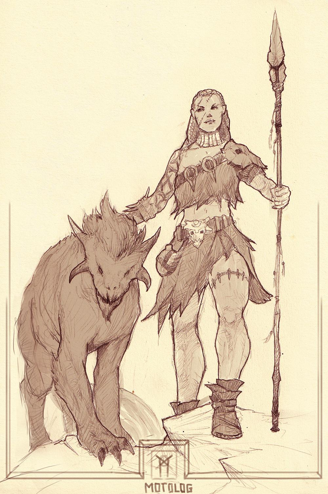

Classes > Rangers > Beastlord
Chaotic only. A wild defender of nature in league with animals, famed for their deep connection to the fauna of the world and their primal way of life.
Beastlords consider themselves to be animals in the flesh of humanoids. They are able to use the Diplomacy skill to convince animals to help them using a complex chain of vocalization and body language. They live in the most feral corners of nature others would never dare enter, in harmony with the beasts. +8 Handle Animal, Ride.
Level 1: Beastlords begin their journey with any animal companion the size of a horse or smaller. The animal is loyal to the Beastlord, will accompany them everywhere they can, can communicate effortlessly with their master and takes its own combat turns (see bestiary for stats). They may only have one, and to replace a companion that has left their service due to mistreatment or perished, they must spend a period of 24 hours tracking down and domesticating a new one.
Level 2: Beastlords may cast miracles as a Druid of half their level rounded down.
Level 3: Beastlords are not hampered by environmental obstacles, and can ignore penalties to speed and attack from unsteady or uneven terrain. They also gain +4 to all Nature spell saves.
Level 6: Beastlords can pass without trace if they wish, becoming completely immune to being tracked or followed once they vanish from a pursuer's direct sight.
Level 10: Beastlords become immune to all poisons and their saving throw bonus to Fire, Frost and all Nature spells increases to +8.
Level 15: Beastlords may summon an animal companion of huge size, or trade this bonus to be able to summon and control two animal companions at once.
|
Level |
Bonus/atk |
Bonuses |
Level |
Bonus/atk |
Bonuses |
|
1 |
+1 |
Search, Animal Companion |
11 |
+11 |
- |
|
2 |
+2 |
Pseudo-Druidism |
12 |
+12 |
Camouflage, Escape Art, +2 stat |
|
3 |
+3 |
Free Running, Nature Resistance |
13 |
+13 |
- |
|
4 |
+4 |
Track, Feat |
14 |
+14 |
- |
|
5 |
+5 |
- |
15 |
+15 |
Animal Companion EX |
|
6 |
+6 |
Pass Without Trace |
16 |
+16 |
Disappear, Blindsight, +2 stat |
|
7 |
+7 |
- |
17 |
+17 |
- |
|
8 |
+8 |
Evasion, Feat |
18 |
+18 |
- |
|
9 |
+9 |
- |
19 |
+19 |
Feat |
|
10 |
+10 |
Immunity to Poison, Resistance |
20 |
+20 |
- |